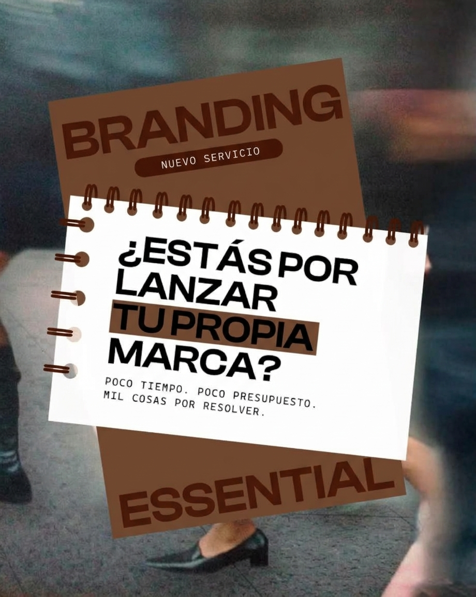

El desafío
Llegar a emprendedores que están por lanzar su marca con poco tiempo y poco presupuesto.
Una muestra de cómo traduzco las necesidades de una marca en piezas visuales claras y directas.
Llegar a emprendedores que están por lanzar su marca con poco tiempo y poco presupuesto.
Una pieza gráfica que habla directo al problema: una pregunta clara, un mensaje breve y una paleta que se destaca sobre una foto en movimiento.
